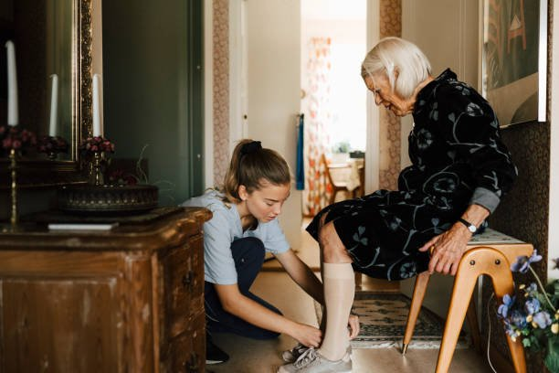

La visita domiciliaria paso a paso
En casa del paciente la enfermera es una invitada y trabaja con lo que lleva en el maletín. Una visita bien preparada ahorra viajes, evita errores y deja a la familia con instrucciones claras.
Revisado en noviembre de 2026 · Fuentes al final de la página

Antes de salir
- Revisar la historia clínica: último plan de cuidados, medicación activa, analíticas pendientes, alergias e informes de alta recientes.
- Llamar para confirmar la hora y quién estará en casa.
- Dejar en el centro la ruta de visitas y la hora prevista de vuelta.
- Preparar el maletín según lo que se va a hacer.
El maletín
| Grupo | Contenido básico |
|---|---|
| Valoración | Tensiómetro validado, pulsioxímetro, termómetro, glucómetro con tiras y lancetas, linterna, cinta métrica |
| Higiene y protección | Solución hidroalcohólica, guantes, mascarillas, bata desechable, contenedor de punzantes, bolsas para residuos |
| Curas | Material estéril de curas, suero fisiológico, apósitos según el plan, vendas |
| Técnicas | Material de extracción y tubos, jeringas, agujas, sondas si están previstas |
| Documentación | Escalas, hojas de recomendaciones para la familia, dispositivo para registrar |
Los fármacos y vacunas que haya que llevar viajan con su cadena de frío y su registro. Se revisan caducidades del maletín de forma periódica.
En el domicilio
- Presentarse, explicar qué se va a hacer y pedir consentimiento.
- Higiene de manos antes y después del contacto, y trabajar sobre una superficie limpia.
- Valorar a la persona y también el entorno: iluminación, alfombras, baño, escaleras, temperatura, alimentos y medicación guardada (ver prevenir caídas).
- Revisar la medicación real que hay en casa frente a la pautada: es donde aparecen duplicidades y errores.
- Hacer los cuidados previstos y enseñar, haciendo que la persona cuidadora lo repita.
- Pactar la próxima visita y dejar por escrito cuándo y a quién llamar.
Seguridad de la profesional
- Ante una situación de riesgo (agresividad, sustancias, animales sueltos), no entrar o salir y avisar al centro. Se puede volver acompañada.
- Llevar teléfono con batería y el número del centro.
- Comunicar y registrar cualquier incidente de agresión, aunque sea verbal.
Después
Registrar la visita el mismo día: valoración, intervenciones, educación dada, cambios en el plan y comunicación con otros profesionales. Eliminar los residuos punzantes en el contenedor del centro.
Fuentes
- Institut Català de la Salut. Programa de millora de l'atenció al domicili des de l'atenció primària de salut. Barcelona: ICS; 2010. ics.gencat.cat
- Ministerio de Sanidad, Consumo y Bienestar Social. Marco Estratégico para la Atención Primaria y Comunitaria. Resolución de 26 de abril de 2019, BOE de 7 de mayo de 2019. www.boe.es